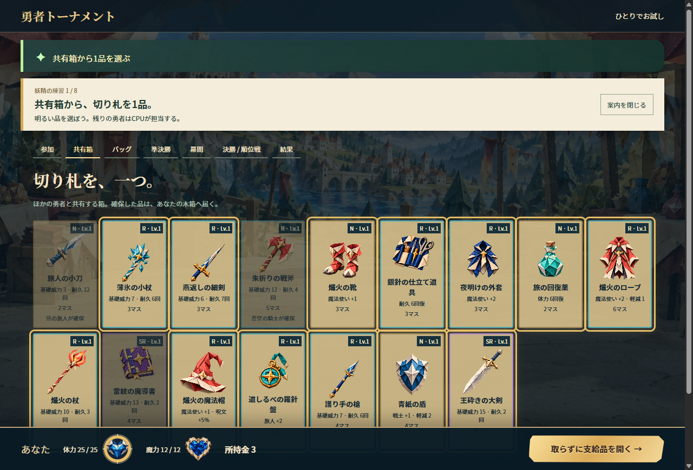

HERO TOURNAMENT
荷物をつめて、
友だちの待つ大会へ。
遊ぶ準備は、ここから。

3つで、遊べる。
WindowsのPCで進めよう。
ダウンロード
Windows版をダウンロードすべて展開
ZIPを右クリック → すべて展開
ZIPの中から直接起動せず、フォルダーごと取り出す。アプリを開く
展開した中の
ゲームはWindowsアプリの中で遊べる。HeroTournament.exeを開く
友だちの部屋から、一試合。
アプリを開く
タイトル画面勇者トーナメント友だちと遊ぶHeroTournament.exeを開き、
「友だちと遊ぶ」へ。招待コードで参加
名前とコードを入力届いた招待コード参加する自分の名前と、友だちから届いたコードを入れる。
準備完了を押す
自分の名前が席に並んだら準備完了押したら、部屋をつくった人の開幕を待つ。
部屋をつくる
友だちと遊ぶ →あなたの名前部屋をつくるHeroTournament.exeを開き、
「友だちと遊ぶ」→名前を入れて作成。招待コードを送る
部屋の招待コードコピーするコピーしたコードを友だちへ。
相手も同じWindows版で参加。二人そろったら開幕
自分も相手も「準備完了」準備完了空席をCPUで埋めて開幕 →自分も準備完了を押し、二人そろったら開幕。
二人＋CPU二人で遊べる。
支給品を開いて、一試合へ。
開幕直後は準備画面。あと3つで最初の対戦。
支給品を開く
共有箱から1品を選ぶ確保した1品と、支給品を開く →1品選んだら、支給品を開く。
自分の道具が木箱に届く。バッグに詰める
持っていくバッグおまかせ配置まずは「おまかせ配置」。
道具がバッグのタイルに入る。二人とも、試合へ
バッグ画面の下このバッグで準決勝へ →二人とも押すと、最初の試合が始まる。
待機画面なら、相手の準備を待とう。
まだ入れていない？ ダウンロードから
妖精と、はじめの一戦。
黄色のふちが、次に押すところ。案内はいつでも閉じたり出し直せる。
- ZIPをダウンロードして、すべて展開。
HeroTournament.exeを開く。- タイトルで「妖精とチュートリアル」。

ひとりで、一大会。
あなた＋CPU3人。部屋作成や招待コードなしで、共有箱から始まる。
- ZIPをダウンロードして、すべて展開。
HeroTournament.exeを開く。- タイトルで「ひとりでお試し」。

うまくいかないとき
アプリが開かない
ZIPを「すべて展開」し、フォルダー一式を同じ場所に置いてください。実行ファイルだけ取り出すと起動できません。
警告や「WebView2が見つからない」などの表示が出たら、無理に進めず、表示された文言を配布した人に伝えてください。
部屋につながらない
同じ版のアプリ・招待コード・ホストがアプリを開いているかを確認し、「再接続」を押してください。
回線の組み合わせによって接続できないことがあります。その場合は、表示されたエラーを配布した人へ。
使える環境・版を確認する
Windows PC向けテスト版 r11d。既存の.NET Framework 4.8とMicrosoft Edge WebView2 Runtimeが必要です。この案内ページはスマホからも読めます。
現在は、ホストのアプリを閉じると大会が終了します。
待機画面のまま進まないとき
部屋では、二人とも「準備完了」→つくった人が開幕。バッグ画面では、二人とも「このバッグで準決勝へ →」。相手がまだ準備中なら、そろうまで待ちます。